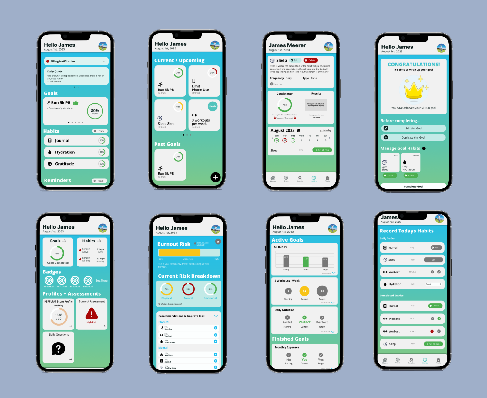
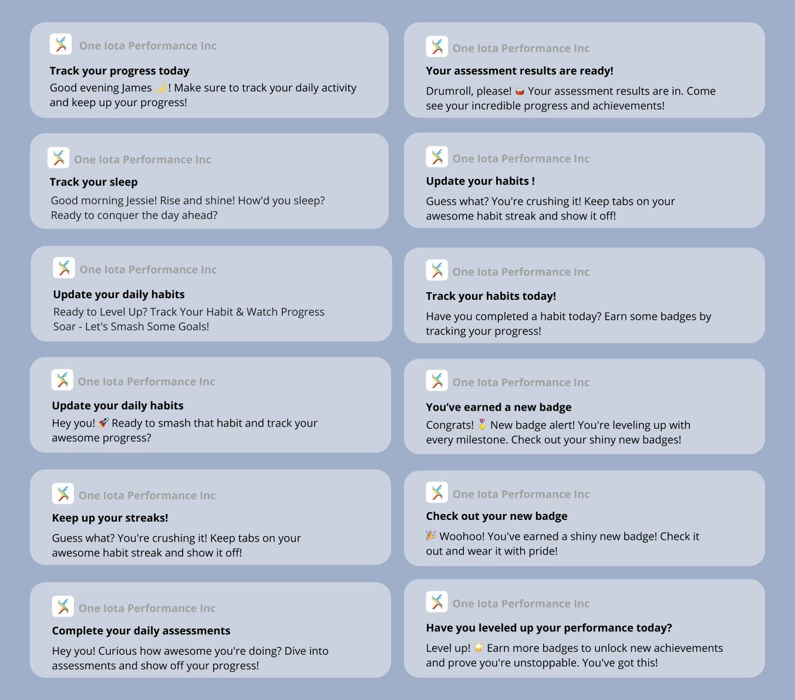

OCT. - DEC. 2023
One Iota Performance Inc. App Audit
Freelance Work

Overview
The goal of this job was to make final adjustments to the wireframes currently created for the mobile app One Iota Performance Inc. App (an app designed to assist users in setting goals and habits for themselves and to track their ongoing progress) to design new wireframes for additional features, modes and assets for the app before it was officially released. Myself and a partner were brought on to the design team of this project to make these final adjustments and additions.
My Roles
Visual Design, Wireframing, Audit Work, Content Writing
Tools
Figma
Team
Emma Ramsay, Lauryn Yau
Process Analysis
Wireframe Analysis
Starting with the audit of the original wireframes, I spent time reviewing the wireframes and taking notes on what I liked about certain wireframes and what I thought made them user-friendly and intuitive, as well as what aspects of the wireframes could be changed to be more visually appealing and user-friendly.
From these notes, I would sketch out wireframes applying my feedback and present them to my partner and the co-founder of One Iota (Ryan Stolys) for feedback. Based on our group feedback I created finalized wireframe.
Creating New Features
We were also tasked with creating additional features that had not been created for the app: Assessments, Daily Surveys, Teams and Subscription modes. I received an overview of the features and what information Ryan would like to be shown.
From our previous audit of the app, I had a good idea of the brand identity, making it easy to stay consistent with the original style of the app. My partner and I would go through an iterative process, where we would separately design wireframes for the features and present both to Ryan, who would give feedback on what he liked and did not like. From there we would collaborate on our wireframes and combine the two wireframes based on our feedback to create a finalized wireframe.
As a result of our consistent process, we ended up with our finalized wireframes of every major screen in the app.
Finalized Wireframes (top: homepage, goal tracking overview, individual goal tracking, goal completed bottom: user profile and progress assessments, burnout risk assessment, goal overviews, habit tracking)
Push Notifications
Our final task was to create unique and intriguing push notifications for users to receive when they had different combinations of in-app tasks to complete. The main goal behind all of the messages in the notifications was for them to be intriguing for the user receiving them, possibly causing them to share the notifications with their friends and allowing One Iota to gain more exposure, and also to motivate the user to open their app and complete their tasks. Being an avid writer, this process was simple and my partner and I were able to collaborate on this task and provide critique on the content we wrote, helping us determine the message that needed to be shown to properly advocate for the brand.
Notifications
Project Conflicts and Solutions
The biggest challenge in this project was understanding the goal of the wireframes we were creating. One Iota’s app largely centred around topics of health and wellbeing which were topics I was unfamiliar with, making it difficult to design for One Iota’s target audience as I lacked understanding. To understand the goal of the app and the users, I spoke with Ryan during our meetings and always asked for clarification when it was needed, as well as did additional research into related apps such as Headspace (mediation and mental wellness app) and briefly discussed with people I knew who used other fitness and health apps their thoughts on similar apps.
Project Reflections
This project allowed me to experience my first professional job in UI and UX design, involving weekly meetings and deadlines. Working on the mobile app for One Iota Performance Inc. was a new experience not only for me as a person, but for my skills as a designer. Auditing the app allowed me to develop my skills in providing useful feedback, analyzing applications and thinking of ways to make them more intuitive and visually interesting for users. It was very beneficial for my partner and I to stay in close contact with each other throughout this process to ensure we were staying consistent with the branding and we were making wireframes that were consistent with each other.
Reflecting on this project I would have liked to make the interface more visually dynamic and interesting for users as parts of the design feels flat, and I feel the use of animations would have made it more interesting.